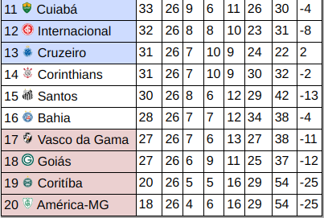

Contato com a Tecnologia
Meu primeiro contato com a tecnologia foi em 2001 através das chamadas na época de Lan House. Dali em diante passei a querer saber mais sobre esse mundo.
Em 2008 comprei meu primeiro Desktop, dali então passei a fuçar mais curiosamente e entendendo mais sobre Hardware, mas longe ainda de chegar a migrar para a programação, aliás nem sabia que o mesmo existia.
Vim saber sobre programação recentemente em 2019 devido a pandemia do corona vírus, nessa época então eu já queria saber o que era a Expressão "Front-end" e "Back-end".Porém só em março de 2023 comecei de fato a estudar mais e conhecer o Front-end
Atulmente estou estudando o JavaScript, mas ja fiz os cursos de HTML5 & CSS3

Experiência e Formações
Meus conhecimentos adquiridos por cursos e formação acadêmica.
HTML5
Curso em Video do Professor Gustavo Guanabara
CSS3
Curso em Video do Professor Gustavo Guanabara
Git e GitHub
Curso em Video do Professor Gustavo Guanabara
JavaScript
Curso em Video do Professor Gustavo Guanabara
Veja também
Clique na imagem para ver a tabela completa do Brasileirão masculino de 2023
